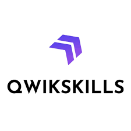
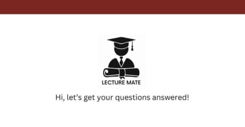
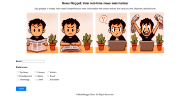

Hello!
This is Poojitha Penta, a current MS Computer Science Grad üë©‚Äçüéì at University of Massachusetts Amherst. My professional interests are deeply rooted in the fields of Machine Learning (ML) and Natural Language Processing (NLP). I possess a solid understanding of fundamental ML algorithms, including Support Vector Machines (SVM), Random Forest, and Neural Networks. I harbor a keen interest in the exploration and application of Large Language Models.
EDUCATION

UNIVERSITY OF MASSACHUSETTS - AMHERST
MASTER OF SCIENCE IN COMPUTER SCIENCE (SEP 2023 - MAY 2025)
Coursework: Machine Learning, Advanced Natural Language Processing, Information Retrieval, Systems for Data Science, Methods of Applied Statistics, Privacy & Security in GenAI

SREENIDHI INSTITUTE OF SCIENCE AND TECHNOLOGY
BACHELOR OF TECHNOLOGY IN COMPUTER SCIENCE & ENGINEERING (2018-2022)
Coursework: Data Structures, Design and Analysis of Algorithms, Operating Systems, Introduction to Data Science, Database Management Systems, Data Mining
EXPERIENCE
Graduate Student Researcher
UMass BioNLP Lab (Feb 2024- May 2024)
📍 Amherst, MA, USA
Responsibilities:
- Worked on developing a robust system using Large Language Models (LLM) to efficiently process and comprehend extensive biomedical texts
- Performed instruction tuning on the curated BioLongInstruct dataset comprising 27,096 records and leveraged LongLoRA to enhance the adaptation of LLaMA 2-7B to the data.

Cloud Engineer Intern
Qwikskills (Feb 2023- Jul 2023)
📍 Remote
Responsibilities:
- Collaborated in building hands-on labs using Azure Services - Cognitive Services, Azure Databricks , Virtual Machine, App services.
- Enhanced the security of infrastructure by embedding custom roles, policies for minimizing the use of SKU configurations.

Software Engineer Intern
AT&T (Mar 2022-Sep 2022)
📍 Hyderabad, India
Responsibilities:
- Built an automated system leveraging Azure Monitor to effectively track and ensure the availability of applications
- Handled delivery of JSON traces to Application Insights using Telemetry Client SDK, scheduled customized alert emails, and analyzed recorded insights through workbooks and charts.
- Developed a REST API interface for telephone ownership lookup using HMAC-SHA256, base64 for authorization, encoding respectively.
Software Developer Intern
TechCiti Technologies Private Limited
(May 2020-July 2020)
📍 India
Responsibilities:
- Deployed a ML Portal named “EMR Data Analysis to Predict Various diseases” using Django framework.
- Engineered the prediction of heart disease, breast cancer, diabetes using Random Forest Classifier, Logistic Regression Algorithms and attained accuracies 91%, 92.7% and 94% respectively.
SKILLS
Python
R
SQL
HTML
C
PyTorch
TensorFlow
Hugging Face
NLTK
spaCy
Scikit-learn
NumPy
Pandas
Matplotlib
Microsoft Azure
Flask
Django
Linux
PROJECTS



CONTACT
Amherst, Massachusetts, United States (USA)